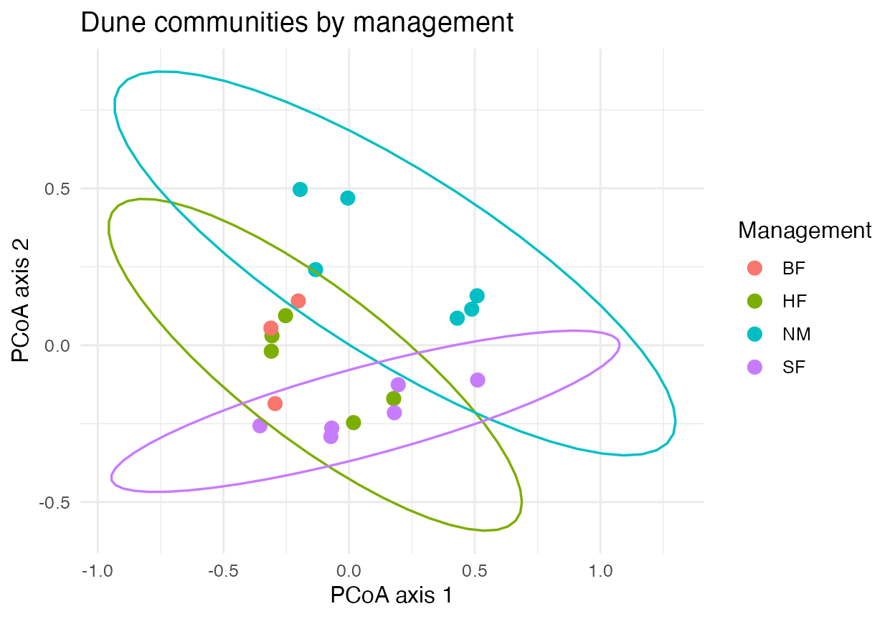

Pairwise contrasts and multiple comparisons
contrasts.RmdAn overall model can show that community composition differs among
groups, but it does not say which ecological comparisons are
responsible. This guide uses the four management classes in
vegan::dune to move from one overall question to planned
contrasts, all pairwise comparisons, and multiplicity control.
management <- data.frame(Management = droplevels(dune.env$Management))
permanova(bray ~ Management, management, permutations = 499, seed = 41)$table
#> Source df SS MS Pseudo-F P(perm) P(MC) Unique perms
#> 1 Management 3 1.468592 0.4895306 2.767243 0.004 0.005 499
#> 2 Residual 16 2.830430 0.1769019 NA NA NA NA
#> 3 Total 19 4.299022 NA NA NA NA NAThe ordination is a visual summary, not the test itself. The model uses the complete Bray–Curtis matrix, whereas the plot shows only two axes.
ord <- cmdscale(bray, k = 2)
ord_plot <- data.frame(
Axis1 = ord[, 1], Axis2 = ord[, 2], Management = management$Management
)
ggplot(ord_plot, aes(Axis1, Axis2, colour = Management)) +
geom_point(size = 3) +
stat_ellipse(aes(group = Management), linewidth = 0.6, type = "norm",
show.legend = FALSE) +
labs(title = "Dune communities by management",
x = "PCoA axis 1", y = "PCoA axis 2", colour = "Management")
#> Too few points to calculate an ellipse
#> Warning: Removed 1 row containing missing values or values outside the scale range
#> (`geom_path()`).
Start with ecological questions
A planned contrast is most useful when it expresses a question chosen before looking at the pairwise results. Here we compare biological farming with hobby farming, and the average of the two more intensively managed classes with the average of the other two classes. Coefficients are applied to equally weighted group centroids and must sum to zero.
design <- compile_permanova_design(~ Management, management, bray)
planned <- rbind(
`biological - hobby farming` = c(BF = 1, HF = -1, NM = 0, SF = 0),
`BF/HF mean - NM/SF mean` = c(BF = 0.5, HF = 0.5, NM = -0.5, SF = -0.5)
)
planned_fit <- permanova_contrasts(
design, planned, adjust = "holm", permutations = 499, seed = 41
)
planned_fit$table
#> contrast df ss ms
#> biological - hobby farming biological - hobby farming 1 0.1617135 0.1617135
#> BF/HF mean - NM/SF mean BF/HF mean - NM/SF mean 1 0.5627522 0.5627522
#> denominator_df pseudo_f p_perm p_adjusted
#> biological - hobby farming 16 0.9141421 0.458 0.458
#> BF/HF mean - NM/SF mean 16 3.1811546 0.020 0.040
#> adjustment
#> biological - hobby farming holm
#> BF/HF mean - NM/SF mean holmEach contrast keeps the remaining group structure in the model, then obtains a permutation p-value for that comparison. Holm adjustment protects the family of planned questions without assuming that the contrasts are independent.
All pairwise comparisons
When there is no small set of pre-specified comparisons,
permanova_pairwise() constructs every pair. The raw p-value
describes one comparison; the adjusted value accounts for having
examined the complete family.
pw <- permanova_pairwise(
design, adjust = "holm", permutations = 499, seed = 41
)
pw$table[, c("contrast", "pseudo_f", "p_perm", "p_adjusted")]
#> contrast pseudo_f p_perm p_adjusted
#> BF - HF BF - HF 0.9141421 0.458 0.458
#> BF - NM BF - NM 3.2009023 0.012 0.048
#> BF - SF BF - SF 2.2705377 0.076 0.228
#> HF - NM HF - NM 3.6817517 0.006 0.030
#> HF - SF HF - SF 1.5990807 0.150 0.300
#> NM - SF NM - SF 4.2824464 0.002 0.012
pw_plot <- pw$table
pw_plot$contrast <- reorder(pw_plot$contrast, pw_plot$p_adjusted)
ggplot(pw_plot, aes(p_adjusted, contrast)) +
geom_vline(xintercept = 0.05, linetype = 2, colour = "grey45") +
geom_segment(aes(x = 0, xend = p_adjusted, yend = contrast),
colour = "grey75") +
geom_point(size = 2.7, colour = "#0072B2") +
scale_x_continuous(limits = c(0, 1)) +
labs(title = "Pairwise management comparisons",
x = "Holm-adjusted permutation p-value", y = NULL)
Do not interpret a non-significant pair as proof that its communities are equivalent. It says only that this analysis did not resolve a difference at the chosen error rate and permutation depth.
Comparisons adjusted for other predictors
In a multifactor model, a management contrast needs an explicit rule
for averaging over other categorical predictors.
weights = "equal" describes an equally represented
ecological population; weights = "proportional" describes
the observed sample composition.
factors <- data.frame(
Management = droplevels(dune.env$Management),
Use = droplevels(dune.env$Use)
)
multifactor <- compile_permanova_design(~ Management + Use, factors, bray)
permanova_marginal_contrasts(
multifactor, factor = "Management", contrasts = planned,
weights = "equal", permutations = 199, seed = 41
)$table
#> contrast weighting df ss
#> biological - hobby farming biological - hobby farming equal 1 0.1592432
#> BF/HF mean - NM/SF mean BF/HF mean - NM/SF mean equal 1 0.6524315
#> denominator_df pseudo_f p_perm p_adjusted
#> biological - hobby farming 14 0.9082249 0.495 0.495
#> BF/HF mean - NM/SF mean 14 3.7210658 0.015 0.030
#> adjustment
#> biological - hobby farming holm
#> BF/HF mean - NM/SF mean holmIf a factor interacts with a numeric environmental gradient, its comparison also depends on where that gradient is evaluated. The reference value is therefore supplied rather than silently chosen.
env <- data.frame(
Management = droplevels(dune.env$Management),
Use = droplevels(dune.env$Use),
A1 = dune.env$A1
)
adjusted_design <- compile_permanova_design(
~ Management * A1 + Use, env, bray
)
permanova_adjusted_contrasts(
adjusted_design, factor = "Management", contrasts = planned,
at = c(A1 = mean(env$A1)), weights = "equal",
permutations = 199, seed = 41
)$table
#> contrast weighting df ss
#> biological - hobby farming biological - hobby farming equal 1 0.09987203
#> BF/HF mean - NM/SF mean BF/HF mean - NM/SF mean equal 1 0.09535882
#> denominator_df pseudo_f p_perm p_adjusted
#> biological - hobby farming 10 0.6277811 0.64 1
#> BF/HF mean - NM/SF mean 10 0.5994117 0.67 1
#> adjustment
#> biological - hobby farming holm
#> BF/HF mean - NM/SF mean holmChoosing familywise protection
For most ecological reports, Holm-adjusted planned or pairwise
comparisons are a clear default. distmer also provides two
shared-permutation procedures:
-
permanova_maxT_pairwise()compares every statistic with the largest value in each common-null permutation. Its familywise guarantee is for the complete null in which all group centroids coincide. -
permanova_pairwise_strong()uses closed testing and protects every pair even when other pairs genuinely differ.
max_f <- permanova_maxT_pairwise(design, permutations = 199, seed = 41)
closed <- permanova_pairwise_strong(design, permutations = 199, seed = 41)
max_f$table[, c("contrast", "p_perm", "p_maxT")]
#> contrast p_perm p_maxT
#> BF - HF BF - HF 0.495 0.910
#> BF - NM BF - NM 0.005 0.065
#> BF - SF BF - SF 0.060 0.190
#> HF - NM HF - NM 0.010 0.025
#> HF - SF HF - SF 0.115 0.465
#> NM - SF NM - SF 0.010 0.010
closed$table[, c("contrast", "p_perm", "p_closed")]
#> contrast p_perm p_closed
#> BF - HF BF - HF 0.19642857 0.1964286
#> BF - NM BF - NM 0.02380952 0.0750000
#> BF - SF BF - SF 0.05952381 0.0750000
#> HF - NM HF - NM 0.03500000 0.0600000
#> HF - SF HF - SF 0.09500000 0.1700000
#> NM - SF NM - SF 0.01500000 0.0250000The strong finite-sample guarantee has an important boundary. It
applies to pairwise equality of complete distributions
for independent one-factor observations. It is not a strong guarantee
for centroid-only nulls when groups have different dispersion or shape.
Use the distance and dispersion checks in
vignette("dispersion") alongside these comparisons.
What to report
Report the contrast coefficients or pair labels, their ecological rationale, the raw and adjusted p-values, the adjustment method, the dissimilarity, the number of permutations, and the seed. A pseudo-F is an effect-to-residual ratio, not an effect size; show an ordination or centroid-distance summary as well.